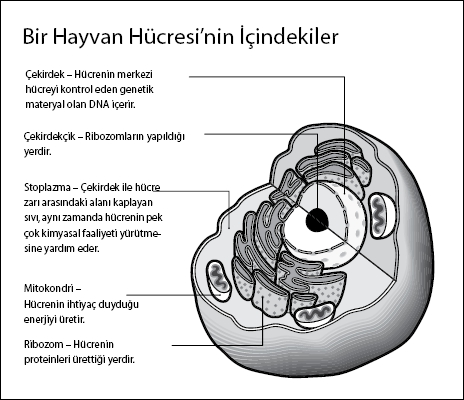

Her tekil canlıyı oluşturan birimleri keşfetmek
Dr. Adam Rutherford, bilim yazarı, Nature dergisinde video editörü
ve BBC dizileri The Cell (Hücre) ve Genome'un (Genom) sunucusu
Ev yapımı mikroskobundan bakan Hollandalı kumaş tüccarı Antonie van Leeuwenhoek şaşırıp kaldı. Civardaki bir göletten bir miktar su getirip onu incelerken ortalıkta hareket eden minik canlılar gördü, bunlar o kadar minikti ki çıplak gözle görülemiyordu. Mikroskobuyla analiz ettiği her şeyde –kurbağa yavrusundan kendi menisine kadar– bu minik yaratıklardan giderek daha fazlasını keşfetti ve onlara "hayvancık" adını verdi.
Kumaş tüccarı olan Leeuwenhoek satın aldığı kumaşın kalitesini saptamak için güçlü büyüteçlere ihtiyaç duyuyordu. Böylece ev yapımı mikroskobu için küçük bir yağmur damlasından daha büyük olmayan güçlü mercekler yaptı ve bu muazzam büyültme işlemi daha önce kimsenin görmediği gizli minyatür bir dünyayı açığa çıkardı.
"Bütün hayat hücrelerden oluşur ve bütün hücreler ancak diğer hücrelerden gelir. Bu, biyolojinin bütünlüğünü tarif eder."
Adam Rutherford
Leeuwenhoek, 1674'te bu yaratıklara ilişkin uzman bir görüş edinmek niyetiyle Londra'daki Royal Society'ye içinde hayvancıkların çizimlerinin ve bir mektubun bulunduğu bir paket gönderdi. Mektubunda insan menisindeki hayvancıkların keşfini de içeren tüm bulgularını kaydetti: "Bazen kum tanesi büyüklüğünde bir maddede binden fazlası bulunuyordu."
Paket, Robert Hooke'un masasına bırakıldığında kendi mikroskobu ile Leeuwenhoek'un gizli dünyasına zum yapmaya çalıştı. Bunun için de Thames Nehri'nden aldığı su örneğini kullandı, ama hiçbir şey bulamadı.
Bilimsel geçmişi ve İngilizcesi iyi olmayan Leeuwenhoek'un iddiaları başlangıçta bilim camiası tarafından göz ardı edildi. Fakat Hollandalı'nın büyük (veya küçük) bir şey üzerinde olduğunu fark eden Hooke, daha da güçlü mercekler yapmaya dönük çabalarını yoğunlaştırdı. Sonunda geliştirdiği mikroskop Leeuwenhoek'un gizemli dünyasını açığa çıkardı. Merceklerin altında hareket eden yaratıklar Hollandalı'nın ayrıntılı çizimlerine kıyasla bulanık olsa da tam karşısındaydılar.
1680'de Leeuwenhoek'un bilime katkısı sonunda takdir edildi ve Royal Society üyeliğine seçildi. Henüz kimse bu mikroskobik dünyanın bütün insan vücudunu nasıl oluşturduğunu açıklayamıyorsa da, Leeuwenhoek'un keşfi muazzamdı.
"Ancak Leeuwenhoek'un daha iyi mercekleri geliştirmesi sayesinde bilimciler daha önce göremedikleri şeyleri görmeye başladılar," diyor Rutherford. "Bu müthiş bir yenilikti."
Dostlar ve İhanet
"Hücre" terimini bulan ilk kişi Hooke oldu. Leeuwenhoek'un paketini almadan neredeyse on yıl önce 1665'te Micrographia adlı kitabını yayınlamış ve bu kitapta basit mikroskobuyla keşfettiği dünyayı anlatmıştı. Analiz ettiği nesnelerden biri kurbağa gövdesiydi. Onu kesip açtığında birbirine kenetli birimlerin oluşturduğu muntazam yapıyı görmüştü. Anlatılanlara göre, manastırlardaki kutu benzeri hücreleri hatırlattığından bu birimlere "hücre" adını vermişti.
Yine de hücre kuramının geliştirilmesi için on dokuzuncu yüzyılı beklemek gerekiyordu. Alman botanikçi Johann Moldenhawer'in bitki hücrelerinin duvarlarla birbirlerinden nazikçe ayrılmış ayrı birimlerden oluştuğunu kanıtladığı sırada bir botanikçi ve bir biyolog hücre kuramını geliştiriyordu. Matthias Schleiden ve Theodor Schwann, inceledikleri hayvan hücreleriyle bitki hücreleri arasında farklılıkların olmasına rağmen, özünde tüm organizmaların temel yapıtaşının hücre olduğunu fark ettiler.
"Bu noktaya kadar hayvan biyolojisi ile bitki biyolojisi arasında çok küçük bir köprü vardı," diyor Rutherford. "Bitkilerin ot özünden, hayvanların da et özünden yapılı olduğu düşünülüyordu. Schleiden ve Schwann sanıldığı gibi, canlıların kendiliğinden oluşmadığını, bütün canlı dokuların hücrelerden meydana geldiğini ve hücrenin de en küçük yaşam birimi olduğunu öne sürdüler."
Ancak bu görüşün kanıtlanması için 1800'lerin ortalarını beklemek gerekiyordu. Polonyalı biliminsanı Robert Remak tavuk yumurtasındaki kırmızı kan hücrelerini incelerken heyecan verici bir olaya tanık oldu: İkiye bölünen bir hücre.
Yahudi olduğundan Remak, Berlin Üniversitesi'nde kalıcı bir mevkiye sahip değildi, bu yüzden bulgularını hocası ve sonradan dostu olan Alman hekim Rudolf Virchow'a gösterdi. Virchow, Remak'ın keşfinin büyüklüğünü fark edince, bulguları bir kitapta yayınlayıp bütün itibarı tek başına yüklendi. Virchow daha sonra bilim, siyaset ve sosyal reformda önemli yerlere gelse de, kaçınılmaz olarak Remak ile dostluğu sona erdi. "Remak bir hücrenin ikiye bölündüğünü gören ilk kişidir," diyor Rutherford. "Virchow aslında onun çalışmasını çalmıştır."
Yapay Hücreler
Artık her birimizin 10 ila 100 trilyon hücreden oluştuğumuzu biliyoruz. Açıkçası sadece iki hücreden geliştiğimiz düşünülürse, bu gerçekten büyük bir rakam. Annenin yumurta kanalında birleşen iki hücre zigotu oluşturuyor, sonra zigot hücreleri embriyo geliştikçe bölünüyor.
Hücre kuramının önemi ve onun günümüzde kaydedilen ilerleme üzerindeki etkisi muazzamdır. "DNA'nın temel taşıyıcısı ve dört milyar yıllık yaşamın nesilden nesile aktarıcısı hücre olmuştur. Fakat şimdi hücre, DNA'ya istediğimizde istediğimiz şeyi yaptırabildiğimiz yeni bir çağa giriyor," diyor Rutherford.
Bu cesur yeni çağ, yapay hücrelerin ve sentetik hayatın çağı.
